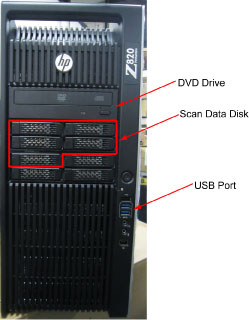
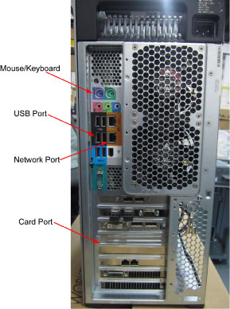
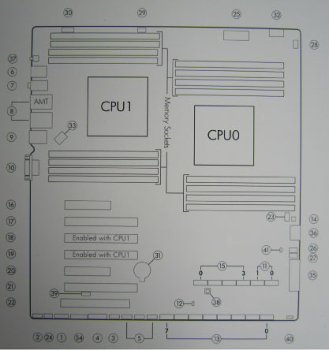
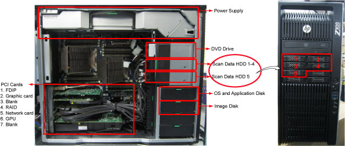
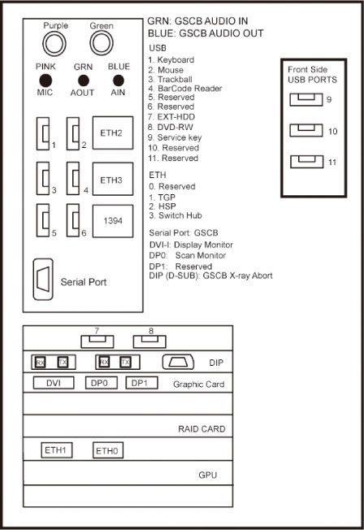

Operating Documentation
Direction 5193574-800, Rev# 22
LightSpeed 7.X Service Methods
Module Version 1.0, Version Date 10/15/13
Operating Documentation |
| Last Revised: | October 10, 2013 |
Host Computer in GOC6.6 VCT console is the central operation controller of the CT system.
Host Computer controls all the GOC6.6 VCT console functions and data flow, including actual image generation. Software in Host computer sends the reconstruction request, recognize the recon mode, timing, parameters, and data, and be able to generate the image set. The raw data is first restored from the disks. The Host Computer then creates an image set and requests image generation to the IG process in Host Computer. While most of the software components (e.g. Recon_Control, Data_Restore, Image_Buffer, and Data_Acq) reside on Host Computer, the components related to image generation also reside on Host Computer.
Main data flow of the Host Computer is described as follows:
Receive raw data from the Gantry
Store the raw data to the scan data disks
Restore the raw data from the scan data disks and transfer to buffer memory in Host Computer.
Take multi-image streams from Image generation processes ran on Host computer, and be saved on image disk in Host Computer.
The Host Computer is comprised of the following:
HP computer: a computer using a high-performance PC workstation
System disk: the OS and Applications software are stored on this disk
Image disk: Images are stored on this disk
Scan data disks: the raw data are stored on five scan data disks (RAID5).
FDIP card: the DAS Interface Processor Card
Gigabit Ethernet (GbE) cards
DVD-ROM drive: will be used for software installation and stand-alone use
RAID card: connect to five scan data disks.
Graphics board: connect to two LCD monitors
GPU: an optional graphic card is used for 16 FPS image reconstruction, ASIR or Fluoro option.
The Host Computer will take advantage of a standard, off-the-shelf motherboard, using dual microprocessors to increase processing density. The Host Computer will use very high performance general-purpose processors, memory, and a server motherboard with GB Ethernet and SAS port(s), and power supply.
Dual Processors: Intel ® Xeon™ Quad Core processors or successor
Memory: 32GB DDR3-1333 ECC DIMM (8x4GB)
Onboard SAS Devices: four (4) SAS ports reside on mother board
Seven (7) PCI/PCI-X/PCI-E expansion slots.
SLOT 1 PCI-E: FDIP card
SLOT 2 PCI-E: Graphics card
SLOT 3 PCI-E: Not used
SLOT 4 PCI-E: RAID Controller
SLOT 5 PCI-E: Dual Part Gigabit Ethernet card
SLOT 6 PCI: GPU card
SLOT 7 PCI-E: Not used.
The following picture show the Z820 panel and component ID.
Illustration 1: Z820 Front Panel

Illustration 2: Z820 Rear Panel

Illustration 3: Mother Board

Detail
Table 1: System Board Overview
| I/O | Cooling | |||
| 1 | Front 1394a | 23 | Auxiliary Fan 1 (Front) | |
| 2 | Front Audio | 24 | Auxiliary Fan 2 (Rear) | |
| 3 | Front USB 2.0 | 25 | CPU / Memory Fans | |
| 4 | Front USB 3.0 | 26 | Front Fan 1 (Top) | |
| 5 | Internal USB 2.0 | 27 | Front Fan 2 (Bottom) | |
| 6 | Keyboard / Mouse | 28 | Liquid Cooling 0 Power | |
| 7 | Rear Audio | 29 | Liquid Cooling 1 Power | |
| 8 | Rear USB 2.0 / Network | 30 | Rear Chassis Fans | |
| 9 | Rear USB 3.0 / 1394a | Power | ||
| 10 | Serial | 31 | Battery | |
| SAS / SATA | 32 | CPU0 Power | ||
| 11 | AHCI | 6Gb/s | 33 | CPU1 Power |
| 12 | HDD LED | 34 | Front Power Button / LED / Speaker | |
| 13 | SAS / SATA | 6Gb/s | 35 | Main Power |
| 14 | SAS (option) | 36 | Memory Power | |
| 15 | SCU | 3Gb/s | 37 | Rear Power Button / LED |
| PCI / PCIe | Service | |||
| 16 | PCIe3 x 8 (4) | CPU0 | 38 | Clear CMOS Button |
| 17 | PCIe3 x 16 | CPU0 | 39 | Crisis Recovery Jumper |
| 18 | PCIe3 x 16 (8) | CPU1 | 40 | ME / AMT Flash Override |
| 19 | PCIe3 x 16 | CPU1 | 41 | Password Jumper |
| 20 | PCIe2 x 8 (4) | CPU0 | ||
| 21 | PCIe3 x 16 | CPU0 | ||
| 22 | PCI 32 / 33 | CPU0 | ||
Illustration 4: Z820 Left Side View

There are two (2) SAS hard disk drives (300GB) and five (5) SAS hard disk drives for scan data connected to RAID card in Host computer. Below are the definition of these four hard disk drives:
SAS0: System disk
SAS1: Image disk
SAS3: Scan data disk 1
SAS4: Scan data disk 2
SAS5: Scan data disk 3
SAS6: Scan data disk 4
SAS7: Scan data disk 5
Below are key performance specifications of the system/image hard disk drives:
Minimum rotational rate of 10,000 RPM
SAS interface (6 Gigabits/second burst rate)
Formatted capacity of 300 Gigabytes
Form Factor: 2.5” half height form factor
Below are key performance of the scan data drives.
Minimum rotation rate of 10,000 RPM
SAS interface
Formated capacity of 300 Gigabytes
3.5” full height
Five Scan Data Disks are connected to the RAID card that enables hardware RAID5 (approximately 512 Gigabytes).
This PCIe FDIP card supports almost the same functionality as the current DIP in that it converts the optical signal received from the Gantry into electrical raw data and writes that data to one of the double buffers on the card. When the received data count reaches a predetermined value it will switch over to the other buffer. The Host Computer then receives this data via the PCI bus. This card supports 64bit, 66MHz, PCI bus interface with an FPGA, and should be able to support 833MB/sec data rate optical fiber interface.
TGPU board in gantry is connected to the Host computer via Gigabit Ethernet (GbE) card connected to one of the PCI-e slots.
Gigabit Ethernet (GbE) card:
Dual Gigabit Ethernet ports
10Base-T, 100Base-TX, 1000Base-TX IEEE802.3ab compatible
64bit, 66MHz (or higher) PCI-e interface
Low profile form factor
Gigabit Ethernet card ports definition is described below:
| Name | Z820 |
| Switch Hub | ETH3 |
| HSP | ETH2 |
| Gantry TGPU | ETH1 |
| Reserved | ETH0 |
The USB ports on Host Computer are used to connect the peripheral devices. The definition of USB ports is listed as below:

Table 2: USB Ports
| Physical Port | Definition |
| 1 | Keyboard |
| 2 | Mouse |
| 3 | Trackball |
| 4 | BarCode Reader |
| 5 | Reserved |
| 6 | Reserved |
| 7 | EXT-HDD |
| 8 | DVD-RW |
| 9 (Front) | Service key |
| 10 (Front) | Reserved |
| 11 (Front) | Reserved |
The DVD-ROM drive is used for software installation, system diagnostics, and to support stand-alone operation of the Host computer.
This PCI card accelerates the back-projection process of the NIO console and is plugged into PCI-e slot in the Host Computer.
This parallel beam back-projector provides the NIO console the ability to off-load the back-projection application from general-purpose processors to fully programmable hardware. This option dramatically increases the reconstruction performance per cost ratio.
Following are the high-level CTQs for the GPU card:
Perform parallel beam back-projection at >16fps
PCI-e compatible
Reconstruct any image matrix size up to 524,288 32bit pixels